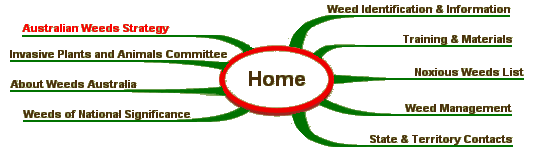

AUSTRALIAN WEEDS STRATEGY

Having a national strategy for weeds is vital to Australia's integrated approach to national biosecurity and complements other national strategies for invasive species, such as those for terrestrial vertebrate and marine pests. The national strategy takes a strategic approach and provides a framework to establish consistent weed management guidelines for all stakeholders. It identifies priorities for weed management across the nation with the aim of minimising the impact of weeds on Australia's environmental, economic and social assets. National Weeds Strategy The initial National Weeds Strategy was launched in 1997. There have been two reports on the implementation of National Weeds Strategy by the Australian Weeds Committee: The 2007 Australian Weeds Strategy The 2007 Australian Weeds Strategy built upon the successes of the initial National Weeds Strategy. It maintained the policy focus, taking into account changes to institutions, legislation, policies and programming that support weed management in Australia. It was endorsed for release by the former Natural Resource Management Ministerial Council on 24 November 2006. Consultation and drafting of the strategy was conducted by the Australian Weeds Committee (formerly a sub-committee of the Council) and involved public consultation with the input of all key stakeholders.
This strategy and its implementation report are available below: Evaluation of the 2007 Australian Weeds Strategy In 2013 an independent evaluation of the 2007 Australian Weeds Strategy was completed: Revision of the 2007 Australian Weeds Strategy Following the 2013 evaluation of the 2007 Australian Weeds Strategy the Australian Weeds Committee is revising and updating the strategy, aiming to release a new weeds strategy in 2015. Stakeholder consultation is an integral part of the revision process. SITE MAP 
| Weed Identification | Australian Weeds Committee |
|
Site Content and Operation: John Thorp Australia Telephone: (03) 6344 9657 Fax: (03) 6343 1877 |
Site Design - Computer Support Tasmania | |
| © Australian Weeds Committee |